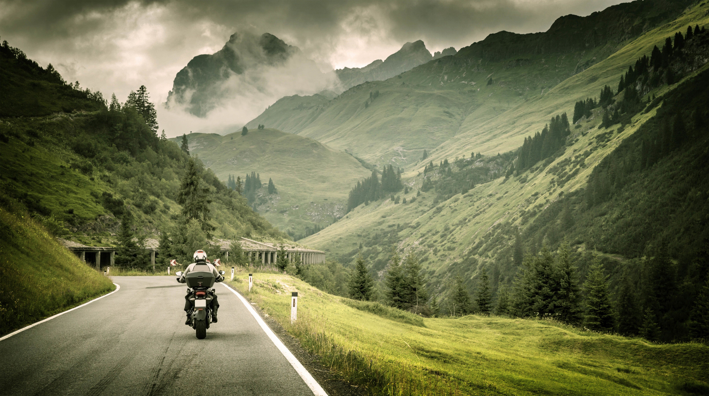
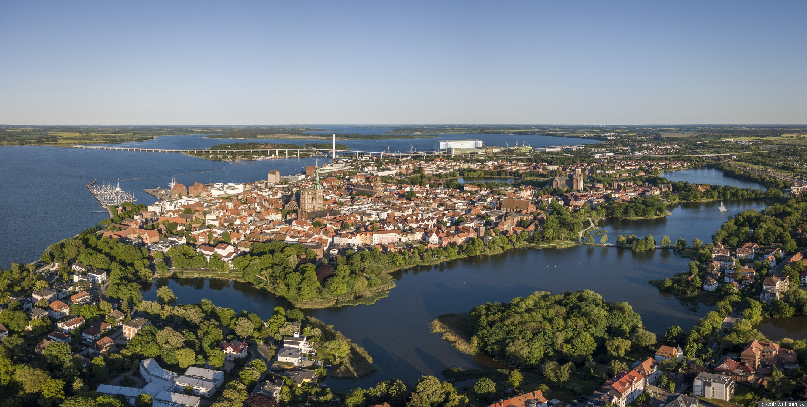

Motorcycle Experiences.

| Destination |
Weather Condition |
Season |
Duration |
Level of Preparedness (0-5) |
Purpose for trip |
Comments (If any) |
| Vestkapp |
Mixed (Sunny, Rainy, Misty) |
Summer |
2 Days |
4 |
Experience |
| Stavanger |
Mostly Rainy |
Fall |
1 Day |
2 |
Experience/Vacation |
Underdressed, due to lack of planning for the season. |
Comments for Vestkapp
- The trip to Vestkapp for a weekend during summer went well, despite mixed weather conditions
and my lack of license at that time. To make the entire trip to Vestkapp possible, I was accompanied by 3 other MC drivers. Since my first MC clothes were meant for 3-4 seasons, they kept me warm and dry, despite quite a bit of rain occasionally.
Picture taken from the top of Vestkapp.

Comments for Germany, Stralsund
- My first long trip to Belgium, only a week or so after receiving my MC license, went from
Haugesund to Stavanger during quite a bit of rain, after which I boarded the ferry and landed
in Hirtshals, Denmark. After a small break to sort a few things out, the horrible weather
from Norway caught up with me, and the trip through half of Denmark was a quite wet, chilly
and an uncomfortable experience. Further more, some issues with Google Maps and having decided to
make the trip to Stralsund by driving across the southers Danish islands instead, I ended up
having to waste time arguing with Gmaps on the exact path. Bad planning ahead also led me to
realise that the small area in Denmark was not connected to Germany by Tunnel or Bridge, but
rather by an expensive ferry. Arriving quite late at the other side, additonal time was spent
driving to Stralsund in chilly temperatures.
Picture of the tourist village of Stralsund near the coast.
